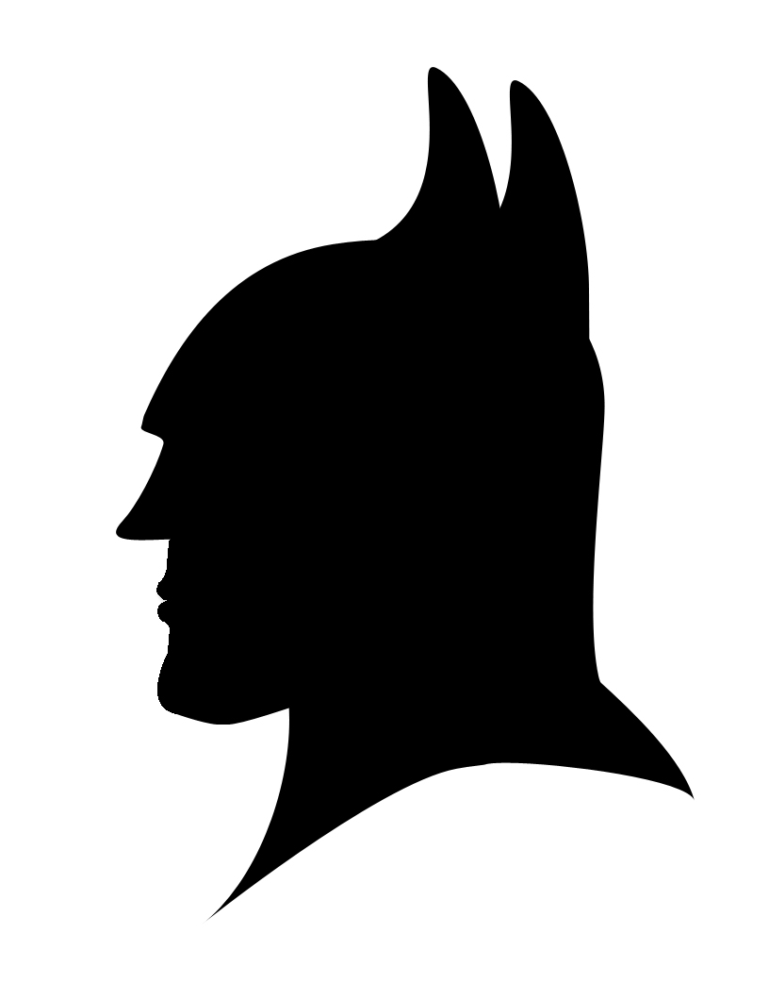

Bachelorthesis Präsentation
Nicolas Roos
Verbesserung der Benutzererfahrung der Kundschaft eines internationalen Velokuriers
02.11.2016
ImagineCargo
Sustainable Courier
Ausgangslage / Problemstellung
Konkurrenz
Prozess

Lösungsansatz
- User Centered Design
- Grundlegende Recherche der Domäne
- Interviews mit Stakeholders & Endbenutzer
- Personas
- Anforderungsanalyse
- Prototyp
Lösungsbeschreibung
Personas
- Mara
- Peter
- Laura
Mara Hürlimann
Peter Elsener
Laura Energie
Personastories
Funktionale Anforderungen

Prototyp
Wieso JavaScript, wieso Node,js, wieso react.js, wieso flux


Lösungsbewertung
- User Centered Design
- Grundlegende Recherche der Domäne
- Interviews mit Stakeholders & Endbenutzer
- Personas
- Anforderungsanalyse
- Prototyp
Vorgehensweise
- Rechere und Gespärche mit ImagineCargo
- Interviews
- Lösungen aufzeigen
- Prototyp implementieren
Planung
Termine
- Abgabe: 17 Juli 2016